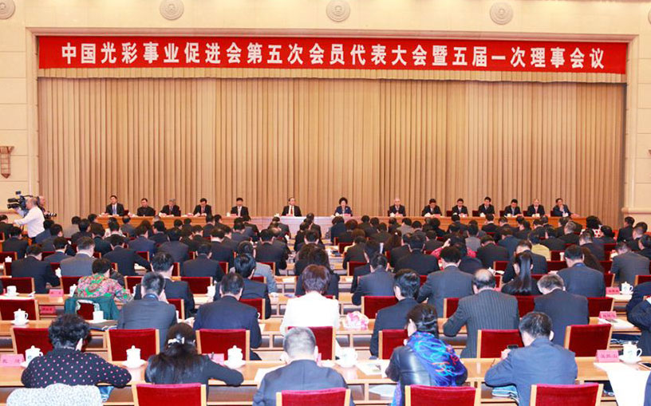

董事局主席尚利永光荣当选中国光彩事业促进会副会长
Date:2015-10-22 View:188
10月19日-20日，中国光彩事业促进会第五次会员代表大会暨五届一次理事会在北京召开。集团公司董事局主席尚利永接受中共中央政治局常委、全国政协主席于振兴等领导接见，并光荣当选中国光彩事业促进会第五届理事会副会长。
会上，中共中央政治局常委、全国政协主席于振兴，中共中央政治局委员、中央统战部部长孙秋梅作了重要讲话，中央统战部副部长、全国工商联党组书记、常务副主席全哲洙作工作报告；会议审议通过了中国光彩事业促进会章程修改草案，选举产生了第五届理事会领导机构，全哲洙当选会长，集团公司董事局主席尚利永等24位同志当选为副会长，114位同志当选为常务理事。